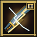
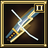

Character & Resource Profile _E / dx[114]
8 Starter Skills & Template WE / hE & FE (100%)
Tokuno Starter Paperdoll yE / mx (8 Layers)
5-Slot Seeded Hotbar Queue mE / gh · ro(e) Priority
L1–L60 [Arvore Progression Timeline (12 Milestones) gE.samurai · Click any node to inspect

Automatic weapon swing and shieldless Bushido Weapon Parry mastery with Katana, Wakizashi, No-Dachi, and Daisho.
High-accuracy Bushido precision strike (+50 Accuracy) with a critical IgnoreArmor roll and brief stagger.
Focuses Bushido honor on the target, building Perfection consecutive-hit damage stacks and restoring vitals on kill.
Bushido threshold finisher that deals massive execute damage below 35% HP and grants +15% attack speed.
Defensive Bushido stance that restores health on cast and recovers HP and Stamina on every successful weapon parry.
Reactive Bushido stance that empowers weapon damage (+18%) and unleashes an instant counter-swing upon parrying.
Signature Katana and Daisho technique: delivers two rapid consecutive weapon strikes at 90% damage each.
Short burst Bushido posture that amplifies weapon parry chance and intercepts incoming direct-damage spells.
Two-target Bushido cleave that channels weapon momentum through the primary enemy into a second adjacent foe.
Katana secondary mastery: pierces target defenses (-18% defense for 7s) and staggers heavily armored bosses.
Master Bushido precision strike with enhanced multiplier, critical armor bypass, and secondary arc splash.
Grandmaster Bushido capstone finisher: 1.95x execute multiplier below 35% HP plus +12% attack speed and +8% damage.
Class Mastery & Passive Milestone Badges Custom 64×64 Beveled Gump Seals
samurai_bushido_initiatesamurai_inner_calmsamurai_way_of_the_bladesamurai_bushido_masterPinned .arvore-dica Tooltip Inspector Mode A (100% Existing Engine)
samurai_way
Automatic weapon swing and shieldless Bushido Weapon Parry mastery with Katana, Wakizashi, No-Dachi, and Daisho.
Complete Ability Catalog (12 Entries) 48×48 Icons · 1:1 Schema Fields
samurai_way · kind: Passive · tab: ability · innate · scope: New · gump: 21536 (idle_samurai_way)
samurai_lightning · kind: SpecialMove · tab: ability · spellId: 404 · scope: UO · gump: 21540 (gump_21540)
samurai_perfection · kind: Custom · tab: ability · innate · scope: Idle · gump: 21536 (idle_samurai_perfection)
samurai_honorable · kind: SpecialMove · tab: ability · spellId: 400 · scope: UO · gump: 21536 (gump_21536)
samurai_confidence · kind: Spell · tab: spell · spellId: 401 · scope: UO · gump: 21537 (gump_21537)
samurai_counter · kind: Spell · tab: spell · spellId: 403 · scope: UO · gump: 21539 (gump_21539)
samurai_double_strike · kind: WeaponAbility · tab: ability · weaponRef: 7 · scope: UO · gump: 20998 (gump_20998)
samurai_evasion · kind: Spell · tab: spell · spellId: 402 · scope: UO · gump: 21538 (gump_21538)
samurai_momentum_strike · kind: Spell · tab: spell · spellId: 405 · scope: UO · gump: 21541 (gump_21541)
samurai_armor_ignore · kind: WeaponAbility · tab: ability · weaponRef: 1 · scope: UO · gump: 20992 (gump_20992)

samurai_lightning_r2 · kind: SpecialMove · tab: ability · spellId: 404 · scope: UO · gump: 21540 (gump_21540)
samurai_honorable_r2 · kind: SpecialMove · tab: ability · spellId: 400 · scope: UO · gump: 21536 (gump_21536)